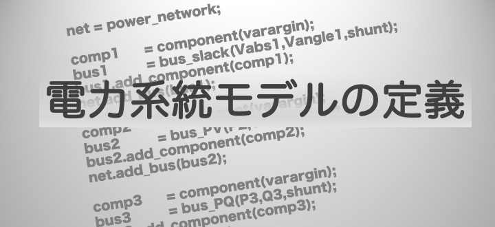

電力系統モデル作成に関する解説は「一連の解析実行例」 でも行っています。そちらのページと本ページではどちらも3母線の電力系統モデルという同規模のモデルを作成していますが、こちらのページで解説する定義方法の方がやや上級者向けとなっています。
- 「一連の解析実行例」ページの構築方法
各母線・機器・ブランチ毎に１つずつ定義を行い系統モデルを構築していく
※GUILDAのソースコードにあるnetwork_sample3busはこちらの方法で書かれています。 - 本ページの構築方法
各母線・機器・ブランチの情報をcsvファイルとしてまとめておき、そのデータからfor文による繰り返し処理によって自動的に系統モデルを構築していく
※GUILDAのソースコードにあるnetwork_IEEE68busはこちらの方法で書かれています。
前者の場合、仮に何百もの母線で構成される系統モデルを構築する際、その分、大量の行数のコードを書く必要が出てきます。一方後者の場合、系統を構成する母線の数が増えようとcsvデータが大きくなるだけでコードを変化させる必要はないため、汎用性に優れていると言えます。
後者の定義方法を自身で考えて書けるようになるには、for文の中でどんな関数を繰り返し処理し、どの部分を一般項にすれば良いのか考えられるようにならなければいけません。そのためには、前者の定義方法のように各母線・機器・ブランチの定義方法を理解している必要があります。
２つの解説ページでは重複している部分も多くありますが、どちらも参考にしてみて下さい。
¶
【解説】¶
ネットワークの定義¶
今回はネットワークの情報をnetと名付けた変数に定義していきます。
まずはじめに以下のようにして電力系統クラスを定義します。全ての電力系統システムはpower_networkクラスを用いて実装されます。
matlab
net = power_network(); % 何も定義されていないネットワーク
この動作はイメージでいうと、空のテンプレート表のようなものを変数netにあてはめており、これからこの表に機器の情報やブランチ・母線の情報を書き込んでいくための準備のようなプロセスです。
ブランチの定義¶
母線をつなぐ送電網の情報は、branchというクラス変数にtable型のデータで格納します。
例えば3busだと以下のようなデータになります。
```matlab
9×7 table
bus_from bus_to x_real x_imag y tap phase
________ ______ ______ ______ ______ ___ _____
1 2 0 0.0576 0 1 0
3 2 0 0.0625 0 1 0
``
どのような電力ネットワークを定義する際もbranch`が7列であることは不変ですが、行数は各バス間をつなぐブランチ(送電網)の本数によって変わります。
- bus_from 接続元のバスの番号
- bus_to 接続先のバスの番号
- x_real , x_imag
ブランチ上のインピーダンスの実部と虚部の値
この値の逆数がアドミタンスになります。 - y 対地静電容量の値
- tap , phase 位相調整変圧器のパラメータ
branchを定義する際のサンプルコード。¶
このbranchという変数はtable型になっており、さらに各列の変数名は上のコードのようにそれぞれ「bus_from,・・・,phase」となっていることが重要です。本シミュレーション内ではこの変数名をもとにデータの抽出を行っています。抽出する際ののコードは次を参考にしてください。
``matlab
% データの数字のみを行列の形で代入
branch_array = [ここにデータを入れる];
%branch_arrayに変数名を追加してtable`型に
branch = array2table(branch_array, 'VariableNames', ... {'bus_from', 'bus_to', 'x_real', 'x_imag', 'y', 'tap', 'phase'}... ); ```
なお、branch_arrayとはarray型のデータで変数名のない行列になります。
以上のようにして作ったブランチの変数branchを電力網の変数に追加するためには、
matlab
for i = 1:size(branch, 1)
if branch{i, 'tap'} == 0
br = branch_pi(branch{i, 'bus_from'}, branch{i, 'bus_to'},...
branch{i, {'x_real', 'x_imag'}}, branch{i, 'y'});
else
br = branch_pi_transformer(branch{i, 'bus_from'}, branch{i, 'bus_to'},...
branch{i, {'x_real', 'x_imag'}}, branch{i, 'y'},...
branch{i, 'tap'}, branch{i, 'phase'});
end
net.add_branch(br);
end
と記述してください。
ブランチの変数名と電力網の変数名をそれぞれbranch、netとしているならばこのコードのままで動くはずです。
母線の変数¶
一般的に母線に関係する変数として以下の6つのものがあります。
これについては、電力システムの構成要素に関する解説ページを参考にしてください。
- : 有効電力
- : 無効電力
- : 電圧
- : 位相角
- : 地面に繋がっているシャント抵抗のインピーダンス
以下の３種の母線はのうち2つの変数とシャント抵抗の値を指定します．
母線の定義¶
母線の情報はnetのa_busというフィールドに格納されます。
また、自分で母線を新たに定義するための関数が用意されています。
母線の種類によって定義に用いる関数は異なり、以下の例のように定義してください。
```matlab % slack母線のとき b = bus_slack(…)；
% PV母線のとき b = bus_PV(…);
% PQ母線のとき b = bus_PQ(…); ```
ここで、bは各母線を表すクラスであり、全ての母線に関して定義する必要があります。
なお、母線を定義する際、bus_slack,bus_PV,bus_PQの引数を...と省略していますが、実行する際はここにパラメータを代入する必要があります。
詳しい引数の説明はこの後の節で行います。
また、母線に機器を繋げる時には、
matlab
b.set_component(…);
という関数を用いてください。
引数は、機器のクラスの変数が入ります。（詳しくは後述）
さらに、既に定義した電力ネットワークを表す構造体の変数netに母線を追加するには、
matlab
net.add_bus(b);
のように用意されている関数を用いてください。
このとき、順番に母線を追加するように気をつけてください。
それでは、以下にこの引数に必要なパラメータの設定について解説していきます。
・slack bus¶
電力ネットワーク内の発電機バスは基本全てPVバスに分類されますが、一つだけ電圧の位相を指定し基準として機能するような特殊なバスが存在します。それがslackバスです。
slackバスでは電圧の絶対値と位相角を指定します。そのため、slackバスの定義は以下のようにV_abs,V_angleを引数としています。
matlab
b = bus_slack(V_abs, V_angle, [G_shunt, B_shunt]);
- 入力引数
- V_abs 電圧．
- V_angle 位相角。通常0となる．
- [G_shunt, B_shunt] 地面に繋がっているシャント抵抗のインピーダンスの実部と虚部．
・PV bus¶
PVバスには、slackバスを除いた全ての発電機バスが分類されます。
このバスでは、その名の通り有効電力Pと電圧の絶対値|V|を指定します。
matlab
b = bus_PV(P_gen, V_abs, [G_shunt, B_shunt]);
- 入力引数
- P_gen 有効電力
- V_abs 電圧
- [G_shunt, B_shunt] 地面に繋がっているシャント抵抗のインピーダンスの実部と虚部．
・PQ bus¶
PQバスは基本的に負荷バスが分類されるバスです。
このバスでは、有効電力Pと有効電力Qを指定します。
matlab
b = bus_PQ(-Pload, -Qload, [G_shunt, B_shunt]);
- 入力引数
- Pload 有効電力．
- Qload 無効電力．
- [G_shunt, B_shunt] 地面に繋がっているシャント抵抗のインピーダンスの実部と虚部．
ここまでで、バスの各種類とそれぞれの定義方法をしめしたので、ここまでのまとめとして、バスを定義するコードをまとめておきます。
この例では、１つ目の母線はPVバス、２つ目の母線はPQバス、3つ目の母線はslackバスとして設定しています。
```matlab
bus_array = [1 1.00 0 0.60 0 0 0 0 0 2;
2 1.00 0 5.45 0 1.0 1.0 0 0 3;
3 1.00 0 1.00 2 0 0 0 0 1];
bus = array2table(bus_array, 'VariableNames', ... {'No', 'V_abs', 'V_angle', 'P_gen', 'Q_gen', 'P_load', 'Q_load', 'G_shunt', 'B_shunt', 'type'} ... );
for i = 1:size(bus, 1) shunt = bus{i, {'G_shunt', 'B_shunt'}}; switch bus{i, 'type'} case 1 V_abs = bus{i, 'V_abs'}; V_angle = bus{i, 'V_angle'}; b = bus_slack(V_abs, V_angle, shunt); b.set_component(get_generator(i, machinery, excitation, pss_data, omega0));
case 2
V_abs = bus{i, 'V_abs'};
P = bus{i, 'P_gen'};
b = bus_PV(P, V_abs, shunt);
b.set_component(get_generator(i, machinery, excitation, pss_data, omega0));
case 3
P = bus{i, 'P_load'};
Q = bus{i, 'Q_load'};
b = bus_PQ(-P, -Q, shunt);
if P~=0 || Q~=0
load = load_impedance();
b.set_component(load);
end
end
net.add_bus(b);
end ```
機器の定義¶
先述の通り、母線への機器接続は以下のように行います．
matlab
b.set_component(component);
以下の解説で機器を定義する関数の解説を行いますが、機器の定義の方法の流れとしては、
- 変数
componentを機器のクラスのインスタンスとする - そのcomponent変数をそれぞれの母線を表すクラス変数
bにset_component関数を用いて代入する といった流れです。
それでは各componentの定義を行っていきます。
componentの定義には以下のような関数があります。
- generator_1axis
- load_impedance 他のcomponentの子クラスも載せるべき？
発電機の定義¶
発電機の定義にはgenerator_1axisという関数を用います。この関数は同期発電機のモデルを各パラメータを引数として得ることで定義する関数です。
下のコードの場合、componentは1軸発電機のインスタンスとなります。
matlab
component = generator_1axis(omega0, mac);
・omega0
基準角周波数のことです。 ・mac
発電機のパラメーターに当たります。
実際には、８個のフィールドをもつtableとなります．以下その例です。branchのパラメータの設定のときと同様にmacもtable型で各列の変数は以下のようになっている必要があります。
table型の変数の定義法に浮いてはbranchの節で参考になるコードを上げていますので、mac用に適宜変えてください。
```matlab mac = 1×8 table
No_machine No_bus Xd Xd_prime Xq T M D __ _ ___ _ _ ___
1 3 1.569 0.324 1.548 5.14 100 2
```
No_machine発電機の番号No_bus何番目の母線につながっているかXd, Xd_prime, Xqd軸、q軸回りの同期リアクタンスTｄ軸回りの回路時定数M慣性定数D制動係数
ここまでで、任意のパラメータを持つ1軸発電機の変数を作ることができました。
しかし、現実の発電機にはAVRやPSSと呼ばれる、応答を好ましいものにするための制御器がかかっていることが一般的です。
そこで、次のように発電機のインスタンスにAVRやPSSの情報も加えることができます。
matlab
component.set_avr(avr_sadamoto2019(exc));
component.set_pss(pss(p))
ここでavr_sadamoto2019はAVRのモデルの１つで、GUILDAにある既存のクラスになります。
引数の情報は次のようになります。
・exc,p
excがAVRに関するパラメータで、pがPSSに関するパラメータです。
以下それぞれの具体的な構成です．
```matlab
exc =
1×3 table
No_bus Ka Te __ _ ____
1 2 0.05
p =
1×6 table
No_bus Kpss Tpss TL1p TL1 TL2p TL2 _ _ _ _ __ ___
1 0 10 0.05 0.015 0.08 0.01
```
しつこいようですが、変数macは発電機のパラメータであったのに対し、このexc,pのパラメータはAVRやPSSの制御器のパラメータです。
負荷の定義¶
負荷の定義にはload_impedanceという関数を用います。この関数は以下の様に定義します。
matlab
component = load_impedance();
コードを見て分かるように負荷を接続するときは、既に定義しているバスのパラメータを用いるため、新しく定義する必要のあるパラメータはありません。
したがって、つなげる母線の変数bに
matlab
load = load_impedance();
b.set_component(load);
という様にして負荷を接続することができます。
ここまで長々と説明してきましたが、一旦全てをまとめたコードをここに書いておきます。 ```matlab function net = network_3bus_1axis()
omega0 = 602pi; net = power_network();
bus_array = [1 1.00 0 0.60 0 0 0 0 0 2; 2 1.00 0 5.45 0 1.0 1.0 0 0 3; 3 1.00 0 1.00 2 0 0 0 0 1]; bus = array2table(bus_array, 'VariableNames', ... {'No', 'V_abs', 'V_angle', 'P_gen', 'Q_gen', 'P_load', 'Q_load', 'G_shunt', 'B_shunt', 'type'} ... );
branch_array = [... 1 2 0 1/12.56041 0 1 0;... 3 2 0 1/13.65107 0 1 0;]; branch = array2table(branch_array, 'VariableNames', ... {'bus_from', 'bus_to', 'x_real', 'x_imag', 'y', 'tap', 'phase'}... );
mac_array = [1, 1, 0.1, 0.031, 0.069, 10.2, 84, 4; 2, 3, 0.295, 0.0697, 0.282, 6.56, 60.4, 9.75]; mac_data = array2table(mac_array, 'VariableNames', ... {'No_machine', 'No_bus', 'Xd', 'Xd_prime', 'Xq', 'T', 'M', 'D'} ... );
exc_array = [1 0 0.05; 3 0 0.05]; exc_data = array2table(exc_array, 'VariableNames', ... {'No_bus', 'Ka', 'Te'} ... );
pss_array = [1 0 10 0.05 0.015 0.08 0.01; 3 0 10 0.05 0.015 0.08 0.01]; pss_data = array2table(pss_array, 'VariableNames', ... {'No_bus', 'Kpss', 'Tpss', 'TL1p', 'TL1', 'TL2p', 'TL2'} ... );
for i = 1:size(bus, 1) shunt = bus{i, {'G_shunt', 'B_shunt'}}; switch bus{i, 'type'} case 1 V_abs = bus{i, 'V_abs'}; V_angle = bus{i, 'V_angle'}; b = bus_slack(V_abs, V_angle, shunt); b.set_component(get_generator(i, machinery, excitation, pss_data, omega0));
case 2
V_abs = bus{i, 'V_abs'};
P = bus{i, 'P_gen'};
b = bus_PV(P, V_abs, shunt);
b.set_component(get_generator(i, machinery, excitation, pss_data, omega0));
case 3
P = bus{i, 'P_load'};
Q = bus{i, 'Q_load'};
b = bus_PQ(-P, -Q, shunt);
if P~=0 || Q~=0
load = load_impedance();
b.set_component(load);
end
end
net.add_bus(b);
end
for i = 1:size(branch, 1) if branch{i, 'tap'} == 0 br = branch_pi(branch{i, 'bus_from'}, branch{i, 'bus_to'},... branch{i, {'x_real', 'x_imag'}}, branch{i, 'y'}); else br = branch_pi_transformer(branch{i, 'bus_from'}, branch{i, 'bus_to'},... branch{i, {'x_real', 'x_imag'}}, branch{i, 'y'},... branch{i, 'tap'}, branch{i, 'phase'}); end net.add_branch(br); end
net.initialize(); end
function g = get_generator(i, mac_data, exc_data, pss_data, omega0)
idx = mac_data{:, 'No_bus'} == i;
if sum(idx) ~= 0
g = generator_1axis(omega0, mac_data(idx, :));
exc = exc_data(exc_data{:, 'No_bus'}==i, :);
g.set_avr(avr_sadamoto2019(exc));
p = pss_data(pss_data{:, 'No_bus'}==i, :);
g.set_pss(pss(p));
end
end
```
上のコードでは、３busの電力ネットワークを例にとって実装しています。
ただ、パラメータの値(bus_array等)を変えるだけで、任意のネットワーク形状や機器を実装することができます。
これで電力ネットワークの定義が一通り終わりました。ここで作成した変数netに対して状態方程式を求めたり、数値シミュレーションを行うことができます。また、ここで作成した電力系統モデルに制御器を付加して解析を行いたい場合は次のパートの制御器設計編を参考にして下さい。